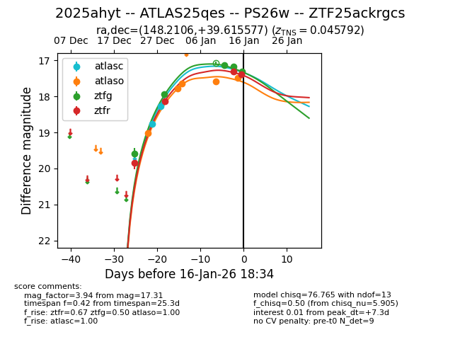
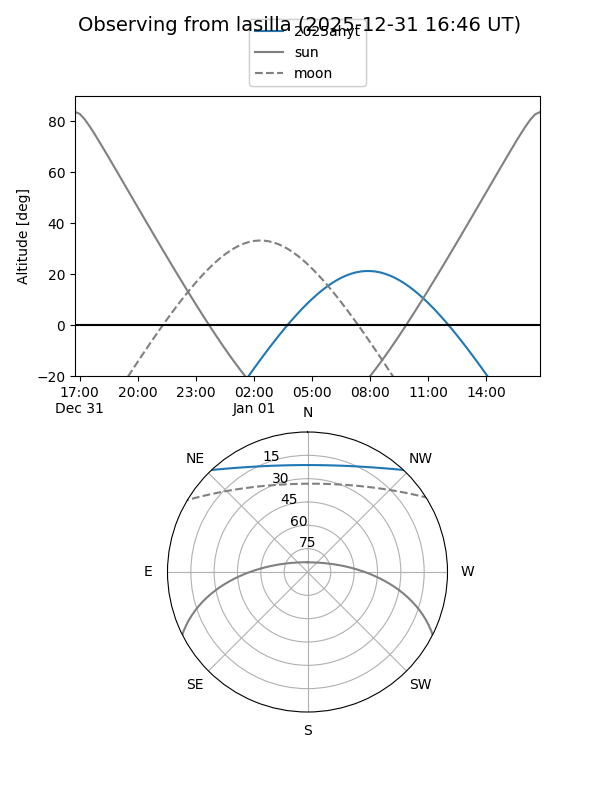
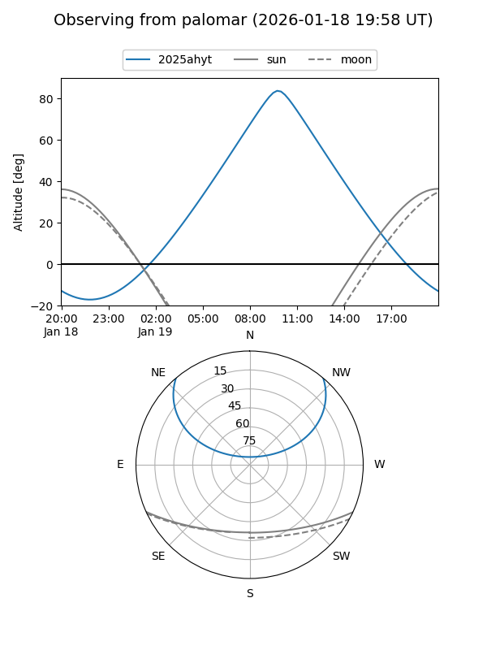
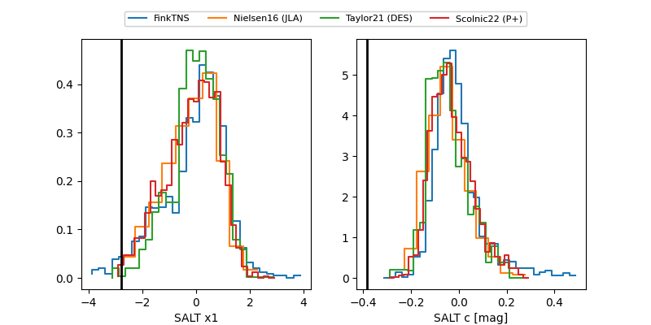

2025ahyt
Target 2025ahyt at 2026-01-16 11:55
Aliases and brokers:
FINK: link
Lasair: link
ALeRCE: link
TNS: link
YSE: link
alt names
ZTF25ackrgcs (ztf,fink_ztf)
2025ahyt (tns,yse)
ATLAS25qes (atlas)
PS26w (panstarrs)
Coordinates:
equatorial (ra, dec) = 148.2106,+39.61558
equatorial (HMS+DMS) = 09:52:50.54,+39:36:56.08
galactic (l, b) = (182.5341,+51.12343)
Flags:
confirmed ia
Photometry:
last atlasc=18.27, atlaso=17.49, ztfg=17.31, ztfr=17.39
2 atlasc, 5 atlaso, 5 ztfg, 4 ztfr detections
Lightcurve

Visibility


Additional plots
